PHPAdvocat
Benutzerhandbuch
Burkhard Obgeröker
Stand: Januar 2006
Version: 0.8
Inhalt
Vorwort
Anmelden
Startseite
Aktenverwaltung
Kostenblatt
Rechnungen
Schriftverkehr
Adressen
Kalender
Buchhaltung
Server-Schema
Entity-Relationship-Modell
PHPAdvocat entstand aus der Not heraus: Kommerzielle Programme waren
nicht nur zu teuer, sie waren zudem noch auf Windows als Betriebssystem
festgelegt. Um dieser Misere zu entgehen entstand ein Produkt, das
Web-Basiert in PHP programmiert wurde und somit auf sehr
unterschiedlichen Plattformen installiert werden kann. Die Bedienung
erfordert lediglich einen HTML-Browsern der - optional - noch
JavaScript beherrschen sollte. Damit ist so ziemlich jedes
Betriebssystem abgedeckt.
Da in PHPAdvovat durchaus sensible Daten gespeichert werden, ist der
Zugang beschränkt durch eine Benutzerverwaltung. Die
Identifikation erfolgt dabei durch die verwendete Datenbank, so dass
dort eine gültige Benutzer/Passwort-Kombination hinterlegt sein
muss. Diese Kennung muss auf dem Startbildschirm eingegeben werden, um
in das System zu gelangen.
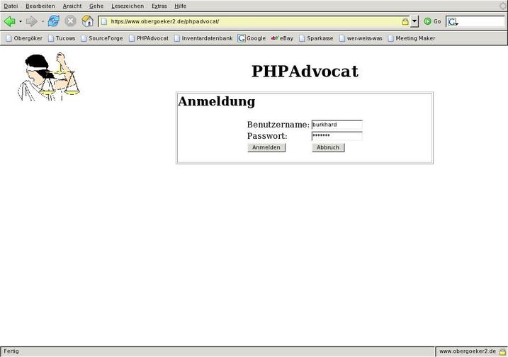
Nach erfolgreicher Anmeldung erscheint der Willkommensbildschirm, auf
dem eine Übersicht über den aktuellen Status gegeben wird.
Neben den heute vorliegenden Terminen wird der aktuelle Finanzstatus
angezeigt. Ein positiver Wert wird grün, ein negativer rot
unterlegt, um die Bedeutung hervorzuheben. Die aktuellen Termine sind
mit einem Link ausgestattet, über den mit einem Mausklick die
entsprechende Akte geöffnet werden kann.
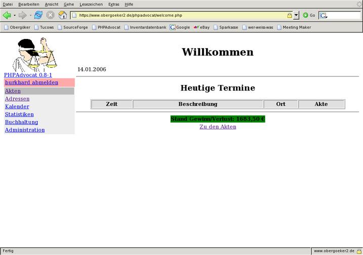
Auf der linken Seite des Bildschirms erscheint das
Navigationsmenü,
über das die einzelnen Module erreicht werden können. Ein
grauer Balken markiert dabei die momentan ausgewählte Position.
Ein Mausklick auf den Punkt "Akten" erzeigt eine tabellarische
Übersicht über die zurzeit offenen Akten:
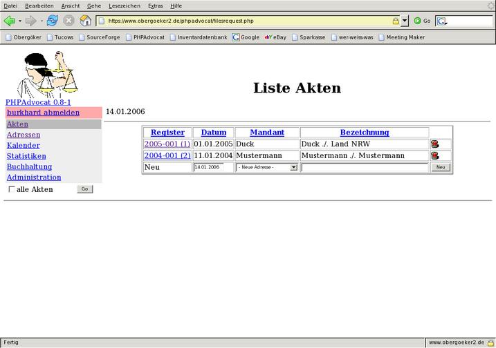
Dort kann eine bestehende Akte geöffnet oder eine Neue angelegt
werden. Letzteres erfordert eine bereits vorhandene Adresse des
Mandanten. Wird statt dessen der Eintrag
"Neue Adresse" gewählt, so erscheint automatisch die Eingabemaske
für die neue Mandantenadresse. Nach erfolgter Eingabe wird diese
einer neu angelegten Akte hinzugefügt und letztere Als erster
Listeneintrag angeboten.
Wird eine Akte ausgewählt, so bietet sich folgendes Bild:
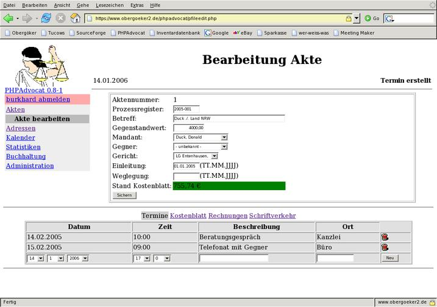
Im oberen Bereich bietet sich die Übersicht über die
Standard-Daten der Akte, sowie der finanzielle Stand des Kostenblattes.
Wie in der Wilkommensseite wird ein positiver Wert grün, ein
negativer rot unterlegt.
Werden in diesem Bereich Daten verändert, müssen sie aktiv
gespeichert werden, indem der Knopf "Sichern" angeklickt wird.
Anderenfalls gehen sie verloren. Dieses Verhalten ist durch die
Web-Technik vorgegeben und kann lediglich durch aufwändige
JS-Programmierung der eines einer nativen Client nachempfunden werden.
Da dieses aber zudem die Browserauswahl sehr einschränkt und
weitere Sicherheitsschwächen nach sich ziehen kann, wurde bewusst
darauf verzichtet.
Der untere Bereich dieser Maske stellt den Detailbereich dar, in dem
von der Akte abgängige Daten angezeigt werden. Die listenartig
angezeigten Details (hier: Termine) können über die untere
Zeile der Tabelle hinzugefügt oder jeweils durch einen Klick auf
die "Mülltonne" am rechten Rand gelöscht werden. Sofern
JavaScript aktiv ist, erfolgt dort zunächst eine
Sicherheitsabfrage.
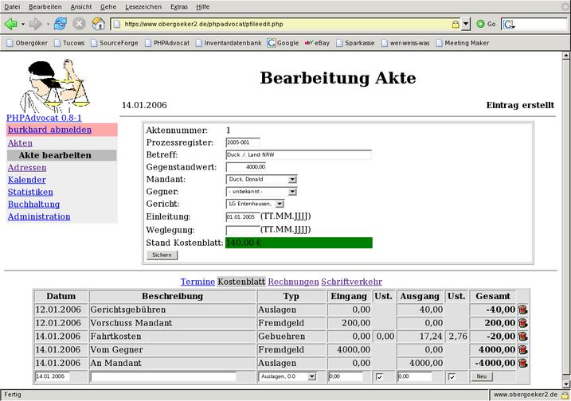
Der Link "Kostenblatt" führt zu der Anzeige des Kostenblattes,
dessen Einträge ebenfalls in Tabellenform angezeigt werden. Das
Hinzufügen eines Eintrages ist allerdings mit einer Besonderheit
verbunden. Der Kostenart-Typ wird in einer Drop-Down-Liste angeboten,
wobei zusätzlich zu der Bezeichnung der mit dem Typ verbundene
Mehrwertsteuer-Satz angezeigt wird. Ist dieser größer als 0,
so wird die entsprechende Mehrwertsteuer aus dem angegebenen Betrag
berechnet und eingetragen. Abhängig
von der Checkbox in der Spalte
"Ust." wird bei gesetztem Haken davon ausgegangen, dass ein Brutto-Wert
eingetragen wurde, während bei nicht gesetztem Haken von einem
Netto-Betrag ausgegangen wird. Die Einträge werden dabei im
Buchhaltungsmodul eingetragen, so dass gleichzeitig die Buchhaltung
weitergeführt wird.
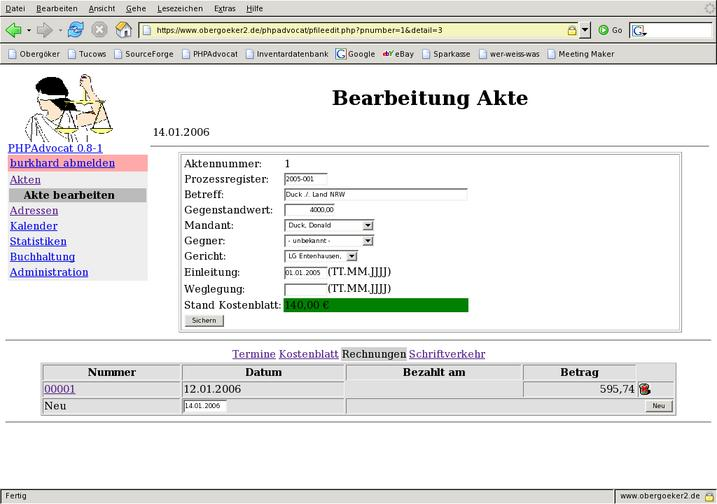
Soll eine Rechnung geschrieben werden, so wird in der dargestellten
Liste zunächst ein Eintrag erwartet, der über den Knopf "Neu"
entsteht. Das angegebene Datum - das jeweils mit dem aktuellen Datum
vorbelegt wird, stellt in der gedrucken Version das Rechnungsdatum dar.
Die Tabellenform ist erforderlich, da pro Akte
mehrere Rechnungen erstellt werden können. Ein Klick auf die
Rechnungsnummer führt dann in die Rechnungsbearbeitungs-Maske.
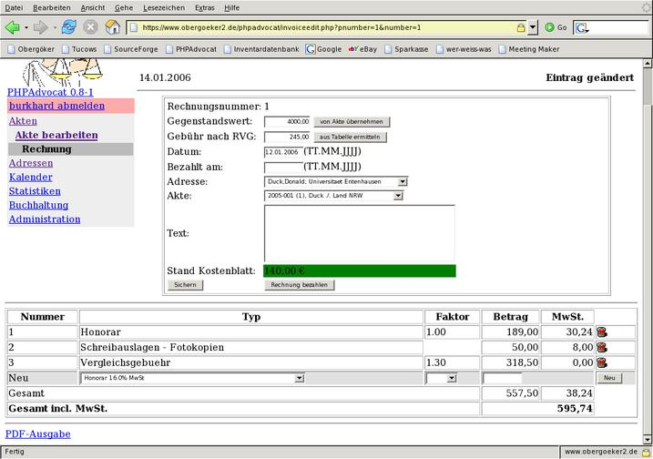
Adressat und Leistungsbeschreibung werden im oberen Bereich gestgelegt,
während die Rechnungspositionen in Listenform ergänzt
werden. War bei der Neueinrichtung der Rechnung der gegenstandswert der
Akte bekannt, so wird dieser übernommen und der Einheitsbetrag
für Gebühren nach RVG berechnet. Wurde der Gegenstandswert
nach der Rechnungserstellung ergänzt, kann dieser wie auch der
Gebührenwert über die angelagerten Knöpfe jederzeit
ergänzt werden.
Die Leistungsbezeichnung der einzelnen Positionen wird aus dem RVG
gewählt, der Betrag von Hand
eingetragen. Bei Honoraren kann statt eines festen Betrages
der Multiplikationsfaktor gewählt werden, nach dem
(gemäß
RVG) der passende Betrag nach dem Gegenstandwert berechnet und
ergänzt wird. Der Mehrwertsteuersatz wird ebenfalls als
Auswahl-Liste vorgegeben und steht standardmäßig auf
"16%". Wird ein Betrag eingegeben, so wird dieser als Netto-Betrag
gewertet.
Der Leistungszeitraum ergibt sich aus dem Anlage-Datum der Akte und dem
Erstellungsdatum der Rechnung.
Eine vollständige Rechnung kann über den Link "PDF-Ausgabe"
als PDF-Dokument mit einem lokalen PDF-Viewer ausgegeben und gedruckt
werden.
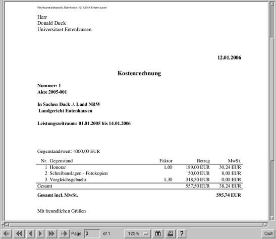
Wurde eine Rechnung bezahlt, so können mit dem Knopf "Rechnung
bezahlen" mehrere Aktionen druchgeführt werden: Zunächst wird
das aktuelle Datum in das Feld "Bezahlt am" eingetragen. Weiterhin wird
in das Kostenblatt der betroffenen Akte der Betrag der Rechnung
wie auch im Buchungsjornal ergänzt. Sollte der "bezahlt"-Knopf
versehentlich ein weiteres Mal betätigt, so wird ein wiederholter
Eintrag abgelehnt, da bereits das Ende-Datum gesetzt wurde.
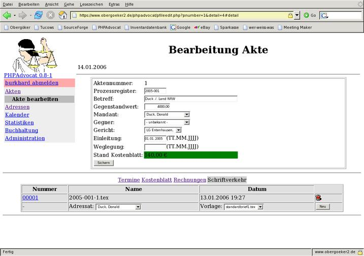
Der Bereich "Schriftverkehr" verwaltet die Dokumente, die im
Zusammenhang mit der betreffenden Akte geschrieben werden sollen. Dazu
werden in der Zeile zur Neuanlage zunächst der Adressat wie auch
die Vorlage ausgewählt, mit der ein neues Schriftstück
erstellt werden soll. Der Klick auf den Knopf "Neu" erzeugt
zunächst nur ein neues Schriftstück, das als Eintrag in der
Tabelle sichtbar wird. Ein Mausklick auf die vorangestellte Nummer
öffnet das Schriftstück im Editor, was nach folgendem Muster
geschieht:

Als Aufbereitungssystem wurde an dieser Stelle LaTeX verwendet, weshalb
der Quelltext des Briefes an diese Form gebunden ist. Durch die Vorgabe
durch die ausgewählte Dokument-Vorlage wird jedoch lediglich der
Schrifttext benötigt. Die Aufbereitung des Dokumentes erfolgt
automatisch, wenn der Link "PDF-Ausgabe" gewählt wird. Der
Webserver sendet dann die generierte Datei an den Client, wo das
Dokument mit einem PDF-Viewer betrachtet und gedruckt werden kann.
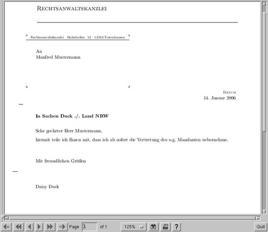
Zwingend notwendig sind die Adressen, um mit Akten arbeiten zu
können. Eine neue Akte kann nur dann angelegt werden, wenn eine
vorhandene Adresse als Mandant angegeben wird. Im Zweifel kann diesen
während des Arbeitsganges zur Aktenanlage geschehen.
Um nun aber die Adressen bearbeiten zu können, ist das
Adressverwaltungsmodul zuständig. Hier werden alle Adressen in
Listenform dargestellt oder können durch einen Einrag in der
letzten Zeile angelegt werden. Besondere Bedeutung komt dabei dem
Adress-Typ zu, über den festgelegt wird, ob es sich um eine
Person, eine Firma oder ein Gericht handelt. Diese Eigenschaft hat
Auswirkungen auf die Auswahlfelder, die in der Aktenverwaltung
vorkommen.
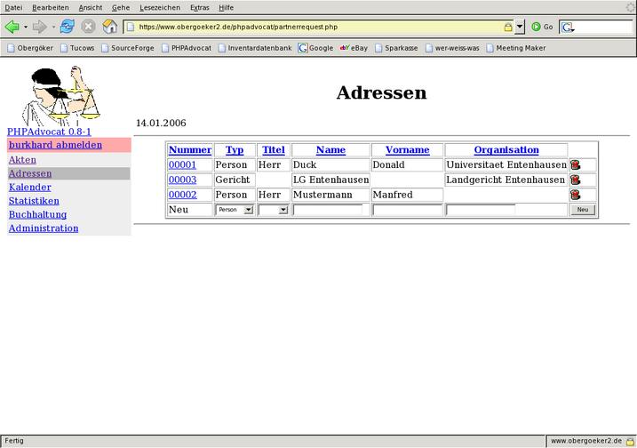
In der Listenform können nur die nötigsten Eigeben gemacht
werden, und auch nur bei der Neuanlage. Für Veränderungen und
Ergänzungen kann die Detailmaske verwendet werden, die über
einen Klick auf die Adressnummer erreicht wird. Auch hier müssen
sämtliche Änderungen mit dem Knopf "Sichern" permanent
gemacht werden.
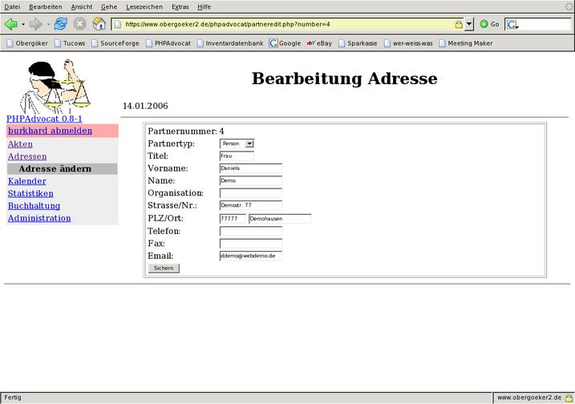
Die Kalenderübersicht dient zur Übersicht über Termine
zu einem Bestimmten Tag. Die einzelnen Tage der abgebildeten Monate
sind auswählbar und werden grün hinterlegt, wenn sie aktiv
sind. Der aktive Monat ist zudem noch am unteren Bereich mit Pfeilen
versehen, über die jeweils ein Tag (einfacher Pfeil) oder ein
Monat (Doppelpfeil) weiter oder zurückgesprungen werden kann.
Ein Termin wird immer mit einer Akte verbunden, die in der Liste als
Ling erscheint und über die zu der betreffenden Akte gesprungen
werden kann.
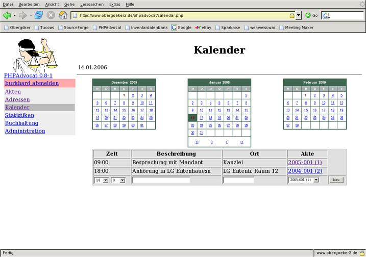
Alle Kosten, die im laufenden Betrieb entstehen, werden zwar in den
Kostenblättern mitgeführt, jedoch hilft das nicht, einen
Überblick über den tatsächlichen Stand der Finanzen zu
bekommen. Weiterhin werden Kosten, die nicht in Verbindung mit einer
Akte entstehen, nicht erfasst, obgleich sie in einer
Gewinn/Verlust-Rechnung nicht fehlen dürfen.
Zu diesem Zweck existiert ein Burchhaltungsmodul, in dem jede Art von
Finanzbewegung festgehalten werden kann. Bedingt durch das Konzept der
Kostenblätter muss das "Default-Konto" (Nr. 1)
zwangsweise existieren, da bei jedem Eintrag in ein Kostenblatt nach
Nettowert und Umsatzsteuerwert differenziert entsprechend gebucht wird.
Es können aber noch beliebig viele weitere Konten angelegt werden,
um z.B. Gehälter, Barkasse oder andere Bereiche abdecken zu
können. In der Kontenliste erfolgt dieses durch die Letzte Zeile,
die über den Knopf "Neu" ein neues Konto erzeugt.
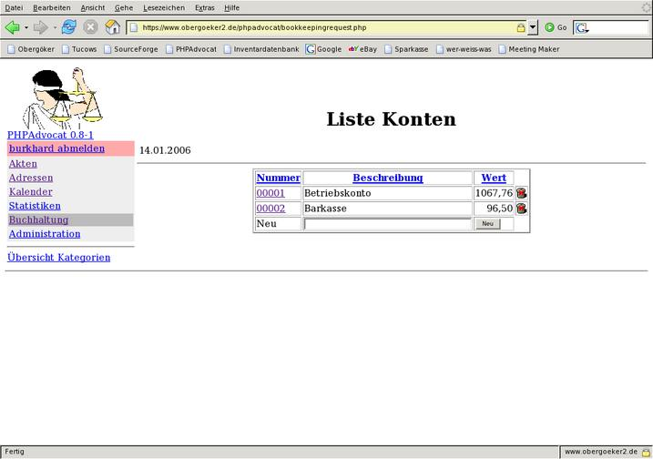
Wird der Link "Übersicht Kategorien" ausgewählt, so werden
die Kategorien als Liste angezeigt. Auch hier können einzelne
Kategorien hinzugefügt oder gelöscht werden.
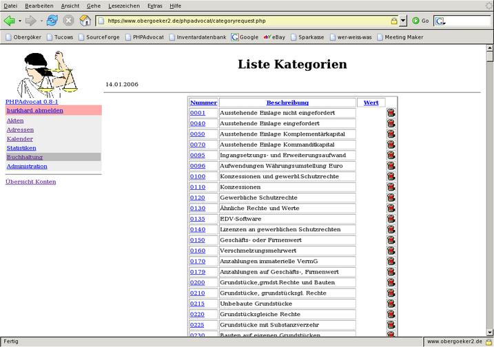
Ein Klick auf die Konto-Nummer in der Konten-Übersicht führt
zur Buchungs-Maske, in
dem ebenfalls in der letzten Zeile Buchungen hinzugefügt werden.
Außer der Beschreibung (Buchungstext) muss die Kategorie muss aus
der Liste ausgewählt werden, um die Buchung
korrekt zuordnen zu können.
Von den zwei Beträgen (Eingang und Ausgang) sollte
normalerweise
nur einer mit einem Wert >0 gefüllt werden. Negative Werte oder
Werte in beiden Feldern sind unübersichtlich und führen
leicht zu falschen Ergebnissen.
Jede Zeile und jede Spalte wird zur Übersicht nochmals mit
einer Gesamtsumme bewertet und der Endwert berechtnet.
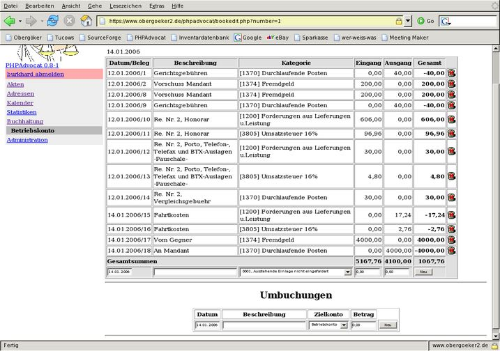
Im unteren Teil können Umbuchungen durchgeführt werden, deren
Zweck darin besteht, dass ein Betrag Bilanzneutral von dem
angezeigten Konto zu einem anderen übertagen wird. Dabei werden
automatisch 2 Buchungen durchgeführt:
- Abbuchung von dem aktuellen Konto
- Zubuchung zu dem angegebenen Konto
In beiden wird die angegebene Beschreibung eingetragen,so dass der
Zusammenhang beider Buchungen nachvollzogen werden kann.
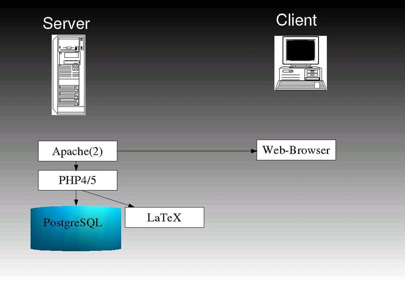
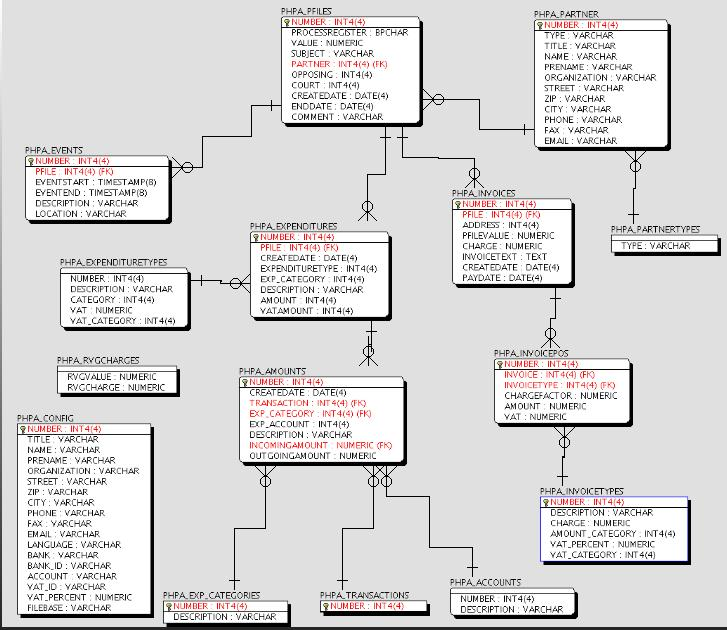